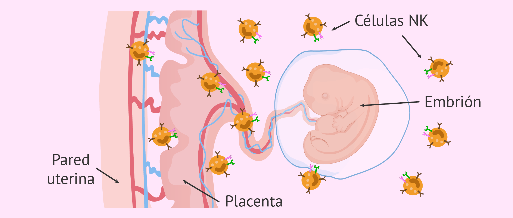

El rechazo inmunológico en el embarazo es una condición conocida de tiempo atrás en el campo de la inmunología del embarazo. Estudios epidemiológicos demuestran que 10 a 15% de todas las parejas, serán infértiles. Se sabe que 2 a 3% de las parejas que se realizan estudios y en las cuales se descarta una patología, son infértiles por mecanismos inmunitarios.
Las funciones de la placenta, como una barrera inmunológica entre la madre y el feto.
El sistema inmune humano permite el desarrollo de un feto genéticamente diferente a la madre, en su propio útero. Esta situación es excepcional, ya que el sistema inmunológico está programado para atacar a cualquier célula diferente a las del organismo materno. Esto se explica por la característica particular de que el embarazo presenta un estado de privilegio inmunológico.
Luego de las técnicas de Reproducción asistida más avanzadas, como ICSI o VIF, más del 50% de los embriones se pierden inmediatamente después de formarse, o un poco más tarde, en lo que se llama aborto bioquímico o clínico. Dentro de las causas de este aborto bioquímico luego de ICSI y IVF, se encuentra el rechazo inmunológico.
Es importante que se produzca un estado llamado de tolerancia inmunitaria entre la madre y el embrión.
Se denomina aborto con medicamentos, aborto médico, aborto con pastillas, aborto químico, aborto farmacológico o no quirúrgico al aborto inducido o IVE causado por la administración de medicamentos. Los medicamentos de referencia son la mifepristona ayudado con el misoprostol.
La Organización Mundial de la Salud mantiene la información sobre los usos y los riesgos del aborto con medicamentos.
El aborto con medicamentos se practica tanto en países donde está legalizado el aborto inducido como en los que está penalizado. El aborto con medicamentos se considera el método más efectivo y seguro para la vida y salud de las mujeres. En general el aborto con medicamentos es preferible al aborto quirúrgico ya que no requiere anestesia ni tampoco intervención quirúrgica. Requiere vigilancia médica para asegurar el éxito y prevenir complicaciones; a menudo la eliminación o evacuación es incompleta y requiere la intervención final de un médico.
La interrupción voluntaria del embarazo con medicamentos es segura hasta la semana 12 de embarazo después de la fecha de la última menstruación. Desde la semana 13 de embarazo en adelante sólo es seguro si el aborto se realiza en un hospital.
México es el primer país de Latinoamérica que autorizó el uso de zacafemyl-mifepristona para interrupción voluntaria del embarazo hasta las 12 semanas y la interrupción legal a partir de las 13 semanas de embarazo.[cita requerida] Algunos nombres de comercialización de la mifepristona en el mundo son Zacafemyl, Mifeprex, Mifegyne y Myfegyn.